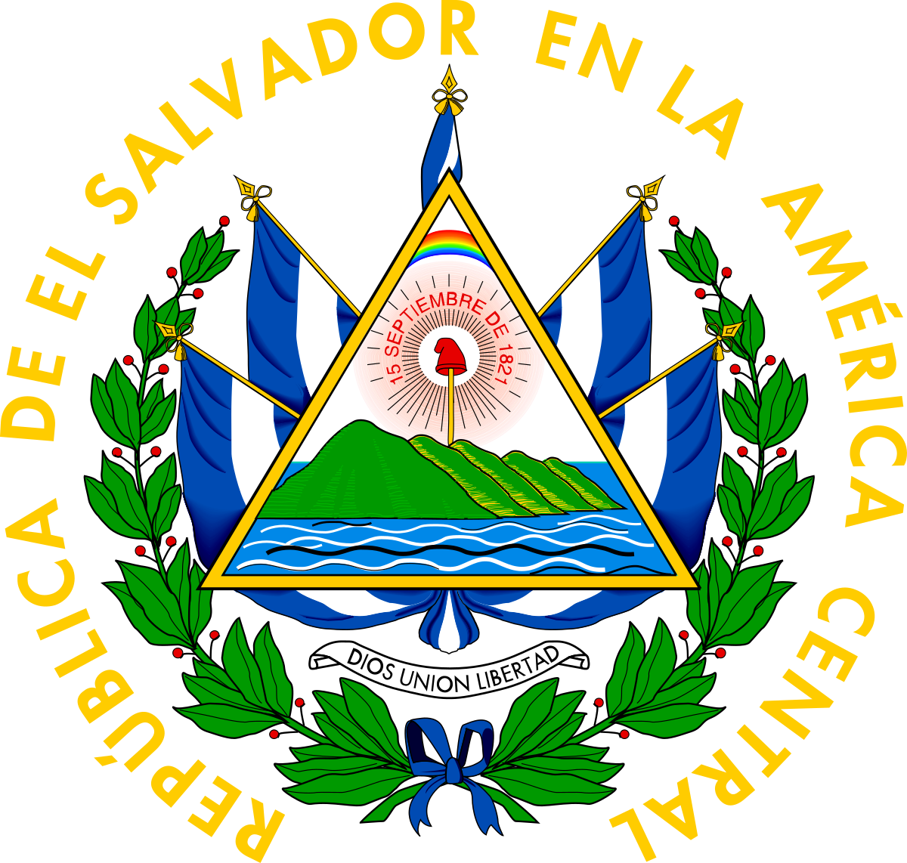
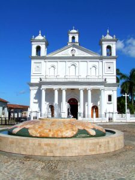

Historia
La civilización de El Salvador data de la época precolombina, alrededor de 1500 años A.C., según lo
evidencia las ruinas de Tazumal y Chalchuapa. Los primeros habitantes fueron los Pocomames, Lencas,
y Pipiles, que se asentaron en las zonas centrales y occidentales del país a mediados del Siglo XI.
El Almirante Español Andrés Niño condujo una expedición a Centro América y desembarcó en la Isla
Meanguera, localizada en el Golfo de Fonseca, el 31 de mayo de 1522. Este fue el primer territorio
salvadoreño visitado por los españoles.
En junio de 1524 el Capitán Español Pedro de Alvarado empezó una guerra de conquista contra
Cuzcatlán (tierra de cosas preciosas) que estaba poblada por las tribus nativas del país. Después de
17 días de sangrientas batallas muchos nativos y españoles murieron, incluyendo al jefe indígena
Atlacatl. Pedro de Alvarado derrotado y herido en su cadera izquierda, abandonó la pelea y se retiró
a Guatemala, comisionando a su hermano, Gonzalo de Alvarado, a continuar con la conquista de
Cuzcatlán. Posteriormente, su primo Diego de Alvarado estableció la villa de San Salvador en abril
de 1525, en un sitio llamado La Bermuda, cercano a la ciudad de Suchitoto. En 1546, Carlos I de
España le otorgó a San Salvador el título de ciudad.
Durante los años siguientes, el país evolucionó bajo dominio español. Hacia fines del año 1810
surgió un sentimiento de libertad entre los pueblos de Centroamérica y el momento de romper las
cadenas de esclavitud llegó en la madrugada del 5 de noviembre de 1811, cuando el Sacerdote José
Matías Delgado, replicó las campanas de la Iglesia La Merced en San Salvador, haciendo un llamado a
la insurrección. Después de muchas luchas internas, se firmó el Acta de Independencia de
Centroamérica en Guatemala, el 15 de septiembre de 1821. Este día conmemoramos el Día de la
Independencia de nuestra tierra Cuzcatleca.
Simbolos patrios
Escudo nacional
Rafael Barraza Rodríguez, calígrafo salvadoreño, creó el escudo nacional. Fue el ganador de 30
participantes más en el concurso promovido por el entonces Ministerio de Guerra y Marina, en 1912. Este
símbolo patrio ha sido inspiración para muchos escritores y poetas que, con el correr de los años, han
dado diferentes interpretaciones.

Bandera actual
La bandera de El Salvador es un paralelogramo de tela compuesto de tres franjas horizontales: la primera
y la tercera azules y la del centro color blanco.
Sus dimensiones oficiales son 3.25 metros de largo por 1.89 de ancho. Cada franja mide 0.63 de ancho.
Puede dársele cualquier dimensión siempre que conserve las mismas dimensiones y colores.
Las dos franjas azules simbolizan los dos océanos que bañan a Centroamérica: el Océano Pacifico y el
Atlántico, el color blanco simboliza la paz.

Oración a la Bandera
Dios te salve, Patria Sagrada,
en tu seno hemos nacido y amado.
Eres el aire que respiramos,
la tierra que nos sustenta,
la familia que amamos,
la libertad que nos defiende,
la religión que nos consuela.
Tú tienes nuestros hogares queridos,
fértiles campiñas, ríos majestuosos,
soberbios volcanes,
apacibles lagos, cielos de púrpura y oro.
En tus campos ondulan doradas espigas,
en tus talleres vibran los motores,
chisporrotean los yunques,
surgen las bellezas del arte.
Patria, en tu lengua armoniosa
pedimos a la providencia que te ampare,
que abra nuestra alma al resplandor del cielo,
grabe en ella, dulce afecto al maestro y la escuela
y nos infunda tu santo amor.
Patria, tu historia, blasón de héroes y mártires,
reseña virtudes y anhelos;
tú reverencias el Acta que consagró la
soberanía nacional y marcas las senda florida
en que la Justicia y la Libertad nos llevan hacia
Dios.
¡Bandera de la Patria,
símbolo sagrado de El Salvador,
te saludan reverentes las nuevas generaciones!
Para ti, el sol vivificante de nuestras glorias,
los himnos del patriotismo,
los laureles de los héroes.
Para ti, el respeto de los pueblos
y la corona de amor
que hoy ceñimos a tu inmortales sienes.
Extensión territorial
21,041 km²
Lista de departamentos
- Zona occidental
- Ahuachapán
- Santa Ana
- Sonsonate
- Zona oriental
- Usulután
- San Miguel
- Morazán
- La Unión
- Zona central
- La Libertad
- Chalatenango
- Cuscatlán
- San Salvador
- Zona paracentral
- La Paz
- Cabañas
- San Vicente
Lugares turísticos mas importantes
1. Lago de Lago de Coatepeque
Lo bonito y curioso de este lago es su origen volcánico y que en los últimos años el lago ha cambiado a
color turquesa en ciertas épocas del año. Es frecuentado no solo por turistas, sino también por locales
que tienen propiedades alrededor de él. Para disfrutar del mismo te recomiendo alquilar una casa,
visitar un hotel o simplemente comer en uno de los restaurantes en la zona.

2. Playa El Tunco –Tunco Beach-
Definitivamente uno de mis lugares favoritos del país. Es una de las playas más populares, dado que el
surf en esta playa es bastante famoso mundialmente. Aquí podrás encontrar un ambiente playero, bohemio,
sin preocupaciones. Puedes caminar tranquilamente por la calle, explorando los diferentes restaurantes
delicioso en la orilla del mar y sus respectivos hoteles. Si buscas un ambiente nocturno en El Tunco, te
recomiendo Monkeylala, Blú y la Guitarra.

3. Ruta de las Flores
En este paseo los paisajes verdes, cafetales y un agradable clima fresco no faltaran. Consiste en visitar
5 pueblos vivos, los cuales son cercanos entre sí. Conocerás Nahzuicalo, el cual es famoso por sus
artesanías y por ser el centro indígena más significativo del país. Luego Salcoatitán, donde encontrarás
dos iglesias bonitas y una de las ceibas más antiguas que podrás ver observar alguna vez. Tu siguiente
parada será Juayua, donde los festivales gastronómicos son todo un atractivo. Apaneca será tu siguiente
destino, en el cual te recomiendo el restaurante Jardín de Celeste y en donde podrás visitar el
laberinto más grande de Centroamérica llamado “El Laberinto de Albania”. Para cerrar con broche de oro
irás a Concepción de Ataco. Este último pueblo es el más famoso, donde no te puedes perder los murales
presentes en las calles principales.

4. Volcán Ilamatepec
Muchos turistas escalan este volcán (el más alto del país) con el objetivo de llegar a su cráter y poder
observar su laguna color turquesa.
La caminata es acompañada de los policías de turismo y dura aproximadamente 3 horas. ¡No dejen pasar
esta hermosa oportunidad!

5. Suchitoto
Suchitoto es conocido por sus calles empedradas y casas estilo colonial.
En el parque central también se encuentra la famosa Iglesia de Santa Lucía, que vale la pena visitar.
Dentro de otros atractivos que se pueden conocer en Suchitoto, se encuentra la cascada Los Tercios (una
gran curiosidad natural y es ideal para mis travelers deportistas ya que pueden experimentar el rappel),
el lago Suchitlan (un lago artificial) y el volcán Guazapa.
